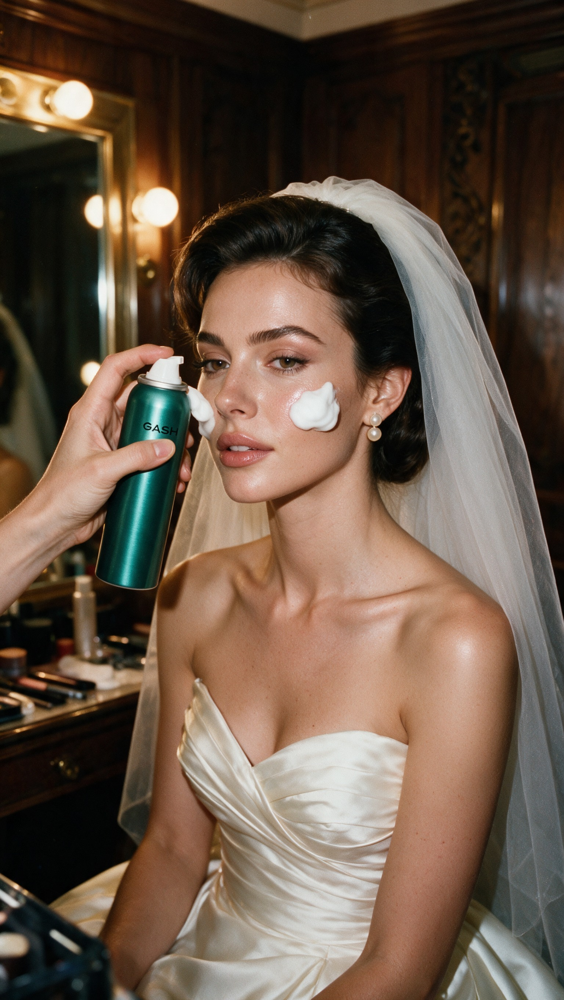
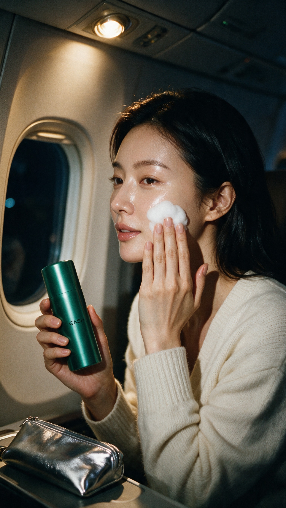
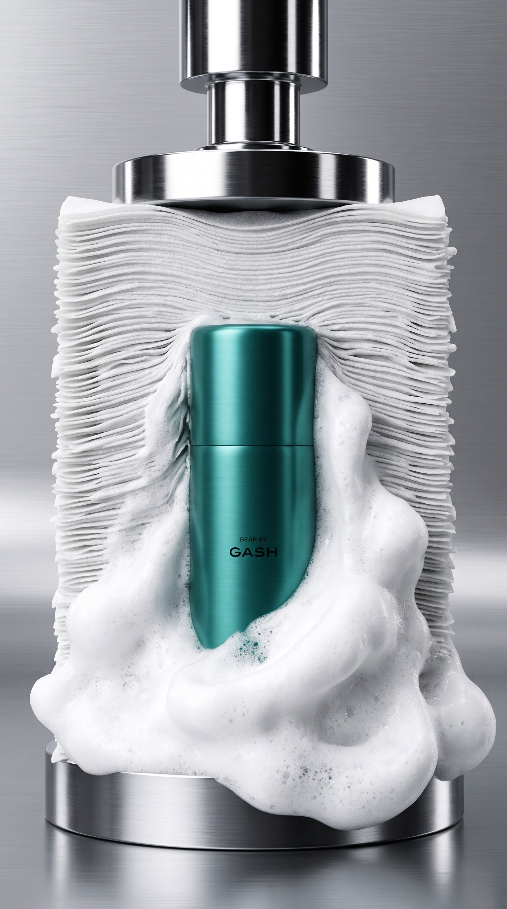
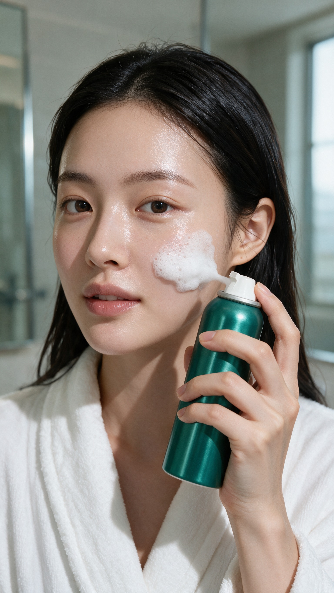
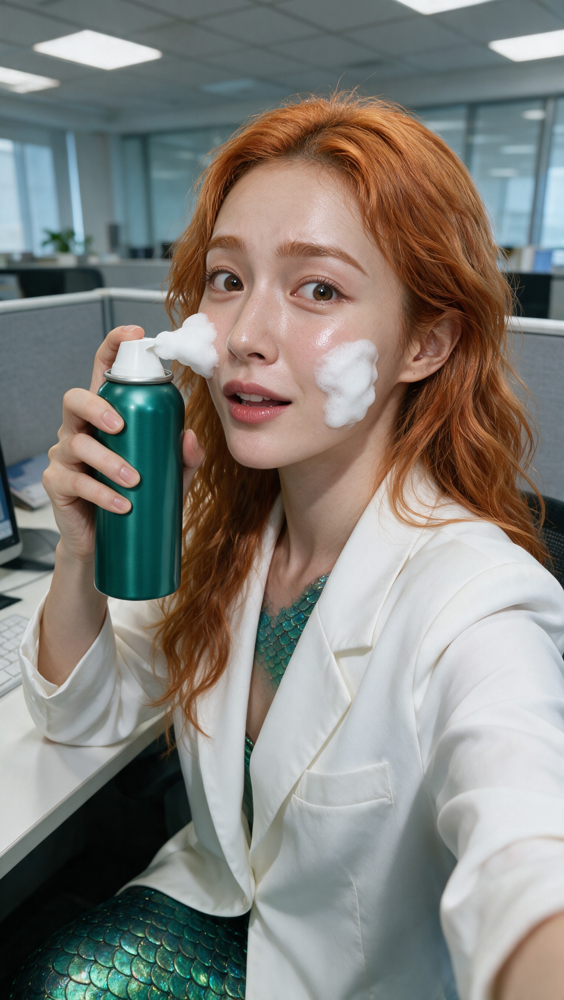
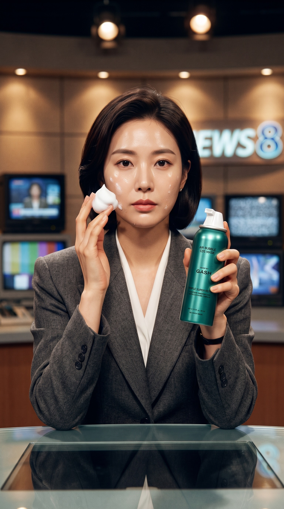
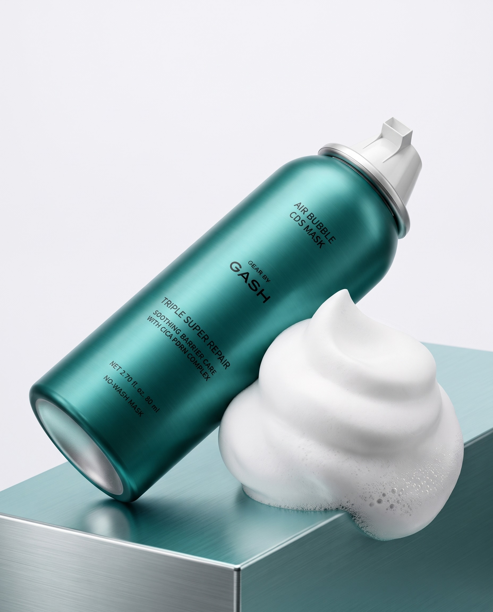
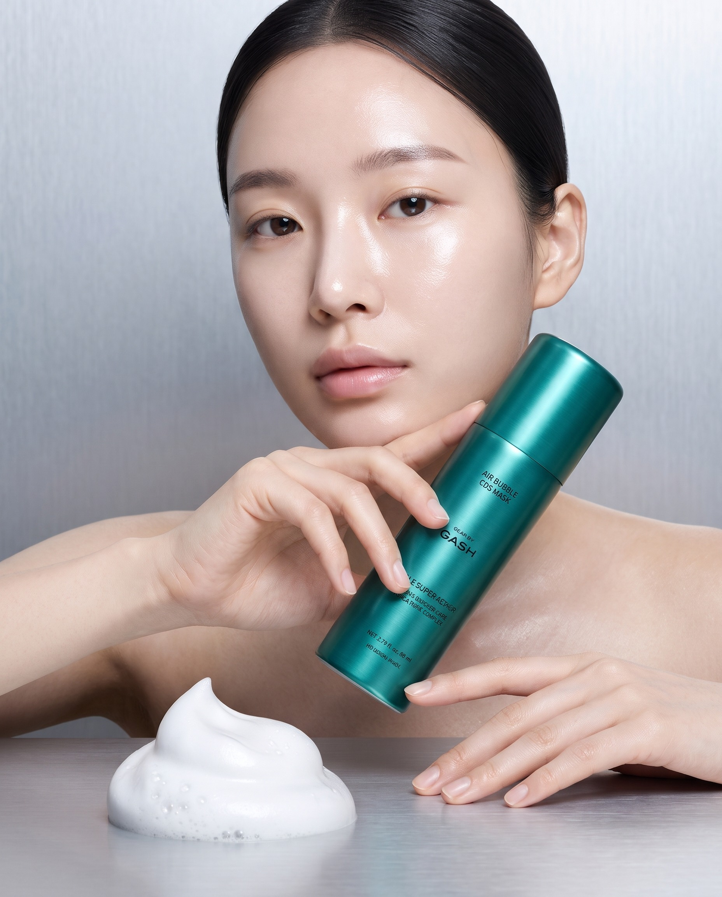

첫 3초 후킹으로 스크롤을 멈추고,
10초 제형 실증으로 구매를 터뜨리는
기어바이가쉬 메타 소재 기획서
대상 제품: [자극 진정] 트리플 슈퍼 리페어 80ml (그린) & 에어버블 CDS™ 5종 + 딥클린 멜팅 밤패드 — 리서치 벤치마크 · 4대 컨셉 트랙 · Track A 풀 대본 · AI 생성 키컷 수록
10초 흡수 · NO-WASH
특허 Air Bubble CDS™ 흡수율 461%
80ml 1병 = 약 150회분 (1회 200원)
90s 필름 드라마 (풀 대본)
본식 1분 전 신부 · 심야 기내 · 백스테이지
초 단위 내레이션·대사 완비
씨즐 · 리얼 UGC · 키치 AI
유압 프레스 압축 · 화장 들뜸 심폐소생 ·
인어 오피스 브이로그 & 속보 뉴스
실제 AI 키컷 8종 탑재
Seedream 5.0 Pro & Nano Banana 2로 생성한 실전 레퍼런스 수록
소재 기획의 근거: 메타에서 실제 CTR과 판매율이 터진 뷰티·AI 공식
예쁜 브랜드 이미지 광고는 소비자가 1.7초 만에 스킵합니다. 실제 성과가 입증된 AI 뷰티 숏폼 사례와 글로벌 스킨케어 메타 데이터에 근거해 소재를 설계했습니다.
AI 상황·제형 극대화 × 실사 보틀 고정
- 더셀랩(The Cellab): AI 모델과 제형 흡수 시각화로 제작비 90% 절감 및 기존 소재 대비 CTR 485% 상승 기록.
- 더마픽스 & 글로벌 FOOH: 비현실적 상황 연출과 거대 오브제 합성이 오가닉 공유·댓글을 폭발시켜 노출 단가 절감.
- 적용 원칙: 초반 3초 상황극·물리 쾌감은 AI로 극대화하되, GASH 에메랄드 보틀과 피부 텍스처는 실사 레퍼런스로 고정해 신뢰 확보.
단일 무드가 아닌 ‘4대 포맷 조합’ 필수
- 1위 · 결점 해결 Before/After UGC: CTR 1.5~2.2% · ROAS 3.5~5.0x (실제 판매 견인 1위)
- 2위 · 성분·수치 권위 실증: CTR 1.1~1.6% · ROAS 2.8~4.0x (
PDRN · 461%) - 3위 · 제형 ASMR 매크로 씨즐: CTR 1.0~1.5% · ROAS 2.5~3.8x
- 일기·브이로그 화법: 메타 공식 기준 브랜드 일방 화법 대비 CTR 평균 +13% 우위.
초반 3초 시청률이 전체 성과를 지배
- 스킨케어 메타 광고 평균 3초 시청률(Hook Rate)은 20~25% 수준이나, 상위 10% 매출 소재는 모두 30%+를 돌파합니다.
- 무음 시청 비중이 높으므로 첫 프레임부터 시각적 대비 + 고통 직격 자막 + 임상 숫자(461%·10초)가 동시에 박혀야 합니다.
- 지속 시청률(Hold Rate) 25%+ 유지를 위해 3초 직후 즉각 마이크로 버블 분사 데모로 진입합니다.
핀터레스트 화장품 광고 레퍼런스 분석 → 팔리는 구도의 4대 공식
핀터레스트 내 고반응 한국 뷰티 광고 핀(SKIN1004, 라네즈, 클리오, 시카 마스크, 허스텔러 등)을 전수 분석해 도출한 20-55-25 레이아웃과 핵심 시각 요소입니다.
단순 보틀 정물 단독 배치 금지 — 반드시 쫀쫀한 화이트 마이크로 버블 질감과 속광 피부 결과를 한 화면에 겹쳐 감각 전이를 유도합니다.
Texture Sizzle First
고성과 뷰티 핀의 공통점은 크림·버블의 쫀쫀한 피크(뿔) 질감을 화면 전면에 크게 배치하거나 0:05 짧은 모션 루프로 만들어 시각적 촉각을 자극한다는 점입니다.
Clinical Pointer Callout
10중 히알루론산 핀처럼 얇은 지시선과 캡슐 배지로 식물성 PDRN+EGF · 2.04µm 미세버블 · 비건 인증을 직관 표기할 때 더마 신뢰도가 급상승합니다.
Texture + Skin + Bottle Split
시카 마스크 레퍼런스처럼 [① 버블 제형 → ② 진정된 물광 볼 → ③ 에메랄드 보틀] 3분할 구도는 설명 없이 1초 만에 인과관계를 납득시킵니다.
Glass-Skin Portrait Triad
유리알 광채 인물 클로즈업(65%) + 보틀 컷아웃 + 하단 제형 스와치 3박자 구도가 K-뷰티 피드 광고에서 가장 높은 저장률과 클릭률을 기록합니다.
K-뷰티 메타 탑 3사의 검증된 후킹을 흡수하고 ‘불편함’을 역공하다
달바·바이오던스·메디큐브가 이미 증명한 흥행 공식을 GASH의 독보적 소구포인트(10초 노워시 · 461% 흡수 · 1회 200원 · 밤패드 증정)로 뒤집습니다.
| 레퍼런스 브랜드 | 메타에서 검증된 흥행 후킹 코드 | 소비자가 느끼는 기존 한계점 | GASH 소재 기획으로의 역공 치환 (USP 결합) |
|---|---|---|---|
| ① 달바 (d'Alba) 승무원 미스트 세럼 |
• 기내·메이크업 전 분사 슬로모션 물광 • “화장 다 뜨는 사람, 뿌리면 파데 안 무너짐” |
액상 미스트 특유의 수분 증발감 및 고농축 장벽 팩 대용 한계 | Track A (90s 웨딩·기내) 직결 날아가는 물 미스트 X → 공기 압축 마이크로 버블 마스크팩(흡수율 461%)이 10초 만에 밀착되어 본식·비행기에서도 안 무너지는 화잘먹 완성 |
| ② 바이오던스 콜라겐 겔 마스크 |
• 불투명한 흰 시트가 투명해지는 물리적 흡수 쾌감 • “떼어내는 순간 깐달걀 되는 팩” |
20분~3시간 이상 붙이고 있어야 하는 귀찮음, 머리카락 붙음, 1장당 3~4천 원 부담 | Track B (씨즐·비교) 직결 하얀 생크림 버블이 단 10초 만에 투명 유리알 광채로 녹아드는 동일한 시각 쾌감 + 붙일·씻을 필요 없는 NO-WASH + 1회 200원(150회분) |
| ③ 메디큐브 PDRN & 제로모공패드 |
• 피부 결점 초근접 전/후 비교 • “피부샵 30만 원 PDRN 관리, 집에서 끝” |
클렌징 패드와 애프터 리페어 제품을 별도 구매해야 함 | Track C (리얼 문제해결 UGC) 직결 식물성 PDRN+EGF(그린) 외 5종에 워터프루프·모공(LHA)을 지우는 ‘딥클린 멜팅 밤패드 본품’을 무료 증정해 “1장으로 지우고 10초로 채우는” 루틴 완성 |
모든 영상 소재에 적용되는 ‘C-B-A 3초 후킹’ & 20초 전환 구조
초반 3초에 스크롤을 못 잡으면 뒤의 17초는 존재하지 않습니다. 전 트랙 영상을 아래의 초 단위 심리 설계 공식으로 제작합니다.
로고 없는 첫 프레임 기습
예쁜 패키지 오프닝 금지. 하얗게 들뜬 코 옆 각질 / 프레스에 압축되는 시트팩 150장 / 열화상 붉은 볼 / 사무실의 말라붙은 인어로 0.5초 만에 손가락을 멈춥니다.
내 얘기 같은 상황 팩폭
무음 상태에서도 단번에 읽히는 12자 내외 상단 자막:
“입장 1분 전 화장 다 떴을 때” / “아직도 시트팩 붙이고 20분 버티세요?”
숫자로 3초 이탈 완벽 차단
모호한 감성어 대신 “단 10초 노워시 · 흡수율 461% · 1회 200원” 구체적 숫자를 3초 끝에 던져 데모 구간 시청으로 강제 연결합니다.
90s 시네마틱 메인 축 + 전환·CTR 극대화 4대 소재 트랙 전체 맵
4대 사용 상황(화잘먹 약속 전 / 여행·기내 / 야근·귀차니즘 / 운동·열감)과 5종 라인업을 4개의 서로 다른 크리에이티브 결로 쪼개어 기획했습니다.
| 트랙 구분 | 핵심 연출 무드 & AI 모델 | 기획 영상 라인업 (각 20초) | 소구 USP & 초반 3초 훅 포인트 |
|---|---|---|---|
| Track A · 메인 주력 90s 필름 드라마 |
35mm 코닥 필름 그레인 · 웜 텅스텐 · 하이패션 실사 인물 (Seedream 5.0 Pro) |
• A-1. 1997 본식 입장 1분 전 신부 • A-2. 1998 심야 퍼스트클래스 기내 • A-1-B. 패션위크 백스테이지 30초 전 |
[중요한 순간 직전 화잘먹 · 휴대성] 입장 1분 전 들뜬 화장 / 기내에서 말라 떨어진 시트팩 위기 → 에메랄드 보틀 10초 노워시 리페어 |
| Track B · 씨즐 정공법 초감각 제형·FOOH 비교 |
크롬 인더스트리얼 스튜디오 · 초근접 매크로 · 열화상 대비 (Nano Banana 2) |
• B-1. 시트팩 150장 유압 프레스 압축 • B-2. 열화상 카메라 10초 급속 쿨링 |
[1회 200원 가성비 · PDRN 열감 진정] 시트팩 150장이 보틀 1병으로 압축되는 물리 쾌감 & 레드→블루 열화상 컬러 변화 |
| Track C · 판매 1순위 리얼 문제해결 UGC |
스마트폰 거울 셀카 · 초밀착 피부결 Before/After (Seedream 5.0 Pro) |
• C-1. 출근 5분 전 파데 들뜸 심폐소생 • C-2. 새벽 2시 야근 여친×귀차니즘 남친 |
[화잘먹 밀착 · 밤패드+블랙 MARK5 연계] 코 옆 낀 파데 초근접 → 밤패드 정돈 + 그린/블랙 10초 흡수로 남녀 동시 전환 |
| Track D · CTR 치트키 키치 AI & 속보 뉴스 |
할리우드 실사 판타지 브이로그 & 90s TV 뉴스 스튜디오 (Seedream + Nano Banana 2) |
• D-1. 육지 출근 3일 차 인어 생존 일기 • D-2. GASH NEWS 시트팩 멸종 속보 |
[극건조 장벽 케어 · 댓글 이벤트 폭발] 히터 앞 말라붙는 실사 인어 / 치킨 먹다 묻는 시트팩 뉴스 제보로 스크롤 완전 정지 |
Track A-1 상세 대본 — 〈1997 웨딩 대기실: 본식 입장 1분 전〉

| 시간 / 컷 | 화면 · 연기 지문 (Visual) | 대사 / 성우 내레이션 (VO) | 화면 자막 & 사운드(SFX) |
|---|---|---|---|
| 0.0–1.5s Cut 1 · HOOK | 90s 우드 몰딩 신부 대기실 문이 열리며 플래너가 손목시계를 두드림. 거울 앞 아이보리 새틴 드레스 신부가 긴장으로 굳어짐. | (플래너 현장음, 다급) “신부님! 입장 딱 1분 남았어요!” | [자막] 본식 입장 딱 1분 전, [SFX] 문 소리 + 하객 웅성거림 + 빠른 초침 |
| 1.5–3.0s Cut 2 · HOOK | 거울 속 신부 앞볼·코 옆 극접사(ECU). 긴장 열감으로 붉은기가 돌고 파데가 하얗게 들뜸. 시트팩을 집었다가(20분 소요) 내려놓음. | (신부 속마음 VO, 초조) “미쳤나 봐… 화장이 다 떴는데, 시트팩 붙일 시간은 없고.” | [자막] 화장이 하얗게 다 떴다. (시트팩 시간 0초) [SFX] 파우치 비닐음 + 짧은 한숨 |
| 3.0–5.5s Cut 3 · DEMO | 아티스트 손이 단호하게 등장해 에메랄드 메탈 GASH 보틀 사선 노즐 클릭. 손끝 위로 생크림 마이크로 버블이 봉긋 솟아오름. | (아티스트 대사, 확신) “씻어낼 필요 없어요. 딱 10초만 주세요.” | [자막] “입장 1분 전, 20분 시트팩 대신 10초.” [10s→07s][SFX] 캡 딸깍 + 무스 분사음 / 90s 스트링 인 |
| 5.5–9.5s Cut 4 · DEMO | 들뜬 앞볼에 흰 버블을 얹고 부드럽게 롤링하자, 세안 없이 투명 수분막으로 사르르 녹아들며 붉은기·각질이 즉각 차분해짐. | (시네마틱 성우 VO) “모공보다 작은 특허 마이크로 버블이 단 10초 만에 깊숙이 스며드니까.” | [자막] 씻지 않는 NO-WASH · 흡수율 461% [07s→03s][SFX] 버블이 촉촉히 녹는 스킨 폴리 |
| 9.5–13.0s Cut 5 · DEMO | 흡수 직후 쿠션 퍼프로 볼을 두 번 톡톡 두드리자 밀림 0%로 착 붙으며 유리알 속광 완성. 거울 보며 안도+미소 짓는 신부. | (성우 VO) “식물성 PDRN 진정부터 밀림 없는 화잘먹 속광까지, 단숨에.” | [자막] CICA PDRN + EGF · 밀림 0% 화잘먹 [00s][SFX] 퍼프 터치 2회 + 벨 차임 |
| 13.0–16.5s Cut 6 · PAYOFF | 양개문이 활짝 열리고 부케 든 신부가 걸어 나가며 카메라를 향해 돌아보며 미소. 90s 플래시가 터질 때마다 광대 물광이 빛남. | (성우 VO) “가장 완벽해야 할 순간 직전, 단 10초면 충분합니다.” | [자막] 중요한 순간 직전, 단 10초면 충분하니까. [SFX] 문 오픈 + 필름 카메라 플래시 연속 |
| 16.5–20.0s Cut 7 · CTA | 브러시드 메탈 위 그린 보틀(센터) + 5종 라인업 & 사은품 딥클린 멜팅 밤패드 정물 샷. | (성우 VO) “시트팩 150장을 한 병에. 기어바이가쉬 에어버블 마스크.” | [자막] 1병 150회(1회 200원) · 최대 46% + 밤패드 증정 [SFX] 세련된 메탈 클릭 잔향 |
Track A-2 상세 대본 — 〈1998 심야 퍼스트클래스 기내의 반칙〉

| 시간 / 컷 | 화면 · 연기 지문 (Visual) | 1인칭 독백 내레이션 (VO) | 화면 자막 & 사운드(SFX) |
|---|---|---|---|
| 0.0–1.5s Cut 1 · HOOK | 어두운 90s 야간 비행기 기내. 옆 승객 얼굴에 붙어 있던 바짝 마른 하얀 시트팩이 무릎으로 ‘툭’ 떨어지며 당황하는 컷. | (차분·세련된 여성 독백 VO) “건조한 비행기 안, 아직도 하얀 시트팩 붙이고 버티세요?” | [자막] 건조한 기내 안, 시트팩 떨어진 적 있죠? [SFX] 기내 소음 + 마른 시트 바스락 추락 |
| 1.5–3.0s Cut 2 · HOOK | 창가석 주인공(캐시미어 니트)이 시크한 가쉬 실버파우치 지퍼를 열어 에메랄드 메탈 GASH 보틀(80ml) 하나만 꺼냄. | “전 시트팩 뭉치 대신, 기내에 딱 이 한 병만 들고 타요.” | [자막] 기내 반입 80ml 한 병 = 시트팩 150장 분량 [SFX] 파우치 지퍼 ‘스르륵’ + 메탈 터치음 |
| 3.0–7.5s Cut 3 · DEMO | 따뜻한 골든 독서등 불빛 아래, 화이트 사선 노즐을 눌러 손끝에 쫀쫀한 생크림 마이크로 버블을 짜 볼에 얹는 클로즈업. | “좁은 화장실에 씻으러 갈 필요도 없거든요. 공기 압축 버블을 얹고—” | [자막] 세면대 갈 필요 없는 10초 NO-WASH [SFX] 독서등 클릭 + 무스 분사음 / 재즈 피아노 인 |
| 7.5–12.5s Cut 4 · DEMO | 두어 번 롤링하자 버블이 투명 수분막으로 싹 스며들고(461%), 그대로 실크 수면 안대를 내리고 편안히 잠드는 35mm 필름 무드. | “10초만 톡톡 두드리면 끝. 사막 같은 기내 공기도 밤새 촉촉하게 막아주니까.” | [자막] 특허 에어버블 흡수율 461% · 수분 장벽 [SFX] 촉촉한 흡수음 + 부드러운 담요 소리 |
| 12.5–16.5s Cut 5 · PAYOFF | 착륙 벨과 함께 창문 덮개를 올리자 쏟아지는 아침 햇살. 장거리 비행 직후인데도 혼자만 탱탱하게 빛나는 유리알 피부 클로즈업. | “내릴 때 혼자만 피부 안 무너진 비밀, 1회 200원이면 충분해요.” | [자막] 12시간 비행 후에도 무너짐 없는 속광 [SFX] 기내 착륙 벨 ‘딩-동’ + 창문 오픈음 |
| 16.5–20.0s Cut 6 · CTA | 가쉬 실버파우치 + 에어버블 5종 보틀 + 멜팅 밤패드 정물 컷. | “여행 가방은 가볍게, 피부는 완벽하게. 기어바이가쉬.” | [자막] 최대 46% 할인 · 실버파우치 & 밤패드 증정 [SFX] 깔끔한 메탈 잔향 마무리 |
Track A 파생 대본 — 〈1999 패션위크 백스테이지: 쇼 오픈 30초 전〉
증정품 ‘딥클린 멜팅 밤패드’의 원패드 세정력과 ‘에어버블’의 10초 부스팅을 한 편의 긴박한 90s 런웨이 백스테이지 서사로 엮은 파생 대본입니다.
3초 HOOK
[대사] “다음 런웨이 오픈 30초 전! 모델 스탠바이!” / (VO) “세수할 시간조차 없는 백스테이지.”
[자막] 다음 쇼 입장 30초 전, 세수할 시간 0초.
Step 1 세안
[VO] “클렌징 밤을 품은 순면 패드 한 장으로 자극 없이 지우고,”
[자막] Step 1. 멜팅 밤패드 1장 원패드 올오프 (LHA 모공케어)
Step 2 부스팅
[VO] “식물성 PDRN 에어버블로 10초 만에 속광을 채우니까.”
[자막] Step 2. 씻지 않는 10초 에어버블 (흡수율 461%)
Payoff & CTA
[VO] “1장으로 지우고 10초 만에 채우다. 지금 사면 멜팅 밤패드 본품 무료 증정.”
[자막] 에어버블 구매 시 멜팅 밤패드 최대 3개 무료 증정
Track B 상세 기획 — 초감각 물리 씨즐 & 열화상 쿨링 실증

〈시트팩 150장 유압 프레스 압축 → 1병〉
3초 HOOK
2.04µm 마이크로 버블 극접사 ASMR → 볼 위 10초 투명 흡수 데모.3,000분 대기 시트팩 150장 vs 10초 노워시 1회 200원 비교 자막 + 5종 & 밤패드 증정 클로징.〈열화상 카메라 10초 급속 쿨링 실험실〉
3초 HOOK
그린(진정) + 실버(수분 집중) 추천 조합 & 최대 46% 혜택 고지.Track C 상세 기획 — 메타 뷰티 판매 전환 1위 ‘리얼 결점 해결 UGC’

〈출근 5분 전 파데 들뜸 10초 심폐소생〉
3초 HOOK
멜팅 밤패드로 3초 정돈 → 그린 에어버블 한 펌프 10초 흡수 → 쿠션 재도포 시 좌(들뜸) vs 우(유리알 밀착) 분할 비교.〈새벽 2시 퇴근 여친 × 귀차니즘 남친 15초템〉
3초 HOOK
멜팅 밤패드 1장으로 5초 세안 → 여자는 그린(진정), 남자는 블랙(MARK5 남성 올케어) 버블 10초 바르고 바로 기절 취침.커플 베스트 조합: 그린 + 블랙 2개 골라담기 + 밤패드 증정.Track D 상세 기획 — 미친 3초 후킹으로 CTR과 댓글(베라 쿠폰)을 터뜨리다

〈육지 출근 3일 차 인어의 생존기〉
0~3s 훅: 할리우드 실사 퀄리티의 에메랄드 비늘 인어 대리가 사무실 히터 바람에 말라비틀어지며 시트팩이 떨어지는 셀카 브이로그.
“바다 밖 인간들아, 얼굴에 젖은 종이를 왜 20분이나 붙이고 있니?”
3~14s 데모: 꼬리 색과 똑같은 에메랄드 메탈 GASH 보틀로 흰 버블을 짜 바르자 10초 만에 유리알 물광 피부로 환골탈태 (1병 150회 · 1회 200원).
14~20s CTA: 최대 46% + 밤패드 증정 & 댓글 달면 베라 아이스크림 쿠폰 50명 추첨 고지로 댓글 폭발 유도.

〈속보: 시트팩 인류 멸종 위기〉
0~3s 훅: 90s 브라운관 저녁 뉴스 특보 화면 + 시트팩 붙인 채 치킨 먹다 양념 묻고 드라이기 바람에 날아가는 웃픈 시민 제보 연타.
3~14s 데모: 진지한 앵커가 데스크 위 GASH 그린 보틀을 들어 자기 볼에 직접 노워시 10초 흡수를 시연하며 흡수율 461% 브리핑.
14~20s CTA: 하단 뉴스 속보 자막 바(Ticker)로 [긴급] 세트 최대 46% 할인 및 멜팅 밤패드 무상 보급 개시 노출.
핀터레스트 구도 기반 4:5 피드 정지화 시안 (Nano Banana 2 생성) & 최종 요약
릴스 영상 4개 트랙과 함께 메타 피드 지면에서 전환을 마무리할 4:5 정지화 에셋 4종 구성입니다.


시트팩 150장 비교 & 5종 골라담기 카드뉴스
- 1p: 시트팩 150장(3,000분) vs GASH 1병(10초 · 1회 200원)
- 2p:
화이트+오렌지(탄력·미백 광채) - 3p:
그린+실버(진정·수분 장벽) - 4p:
그린+블랙 MARK5(남성 올케어)
UP TO 46% + 본품 증정 리타겟팅 보드
- 구성: 5종 보틀 단상 + 멜팅 밤패드(1~3개) + 실버파우치 실물 떼샷
- 사은품 강조: 전구매 뮤신 클렌저(300명) · 4개입 실버파우치(100명) · 댓글 베라 쿠폰(50명)